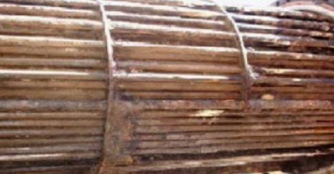

Fluid Allocation in Shell and Tube Heat Exchangers
Tube side or shell side? The answer balances thermal performance against cost, cleaning, inspection and corrosion. The factors that decide it, and how the exchanger type changes the choice.
Fluid allocation, deciding which fluid flows through the tubes and which through the shell, is a key decision in the design of a shell and tube heat exchanger. It determines whether the exchanger achieves the required thermal duty at an optimized cost with satisfactory reliability in service. The right choice depends on many interacting factors: some come from the thermal design, others from the mechanical design and from future inspection and integrity monitoring.
In many cases the best routing can only be decided after both options have been designed. Often it is a trade-off, because no single choice satisfies every factor and some factors conflict. Understanding the effect of each factor, and the main features of each exchanger type, is therefore essential to selecting an optimized design.
Each exchanger type, whether fixed tubesheet, floating head or U-tube, also has its own characteristics that make it preferable for particular services.
Main factors affecting fluid allocation
Allowable pressure drop
The flow area on the shell side is larger than on the tube side, so flow resistance and pressure drop are lower. A fluid whose pressure drop must be kept low to meet plant operating limits should normally go on the shell side.
Operating pressure and temperature
The higher-pressure fluid is preferably placed on the tube side, because the required thickness of a pressure part is proportional to its diameter. For a cylindrical shell under internal pressure [6]:
where t is the required thickness, P the design pressure, R the inside radius, S the allowable stress and E the joint efficiency. A thick shell increases cost, affects the foundation design and can make fabrication harder (welding, forming and inspection).
In some cases, routing the higher-pressure fluid through the shell gives a cheaper unit, particularly if it reduces the exchanger diameter and the shell is carbon steel [1].
Temperature has a similar effect: at high temperature the allowable stress S falls, the required thickness rises, and the hotter fluid is likewise better on the tube side.
When the higher-pressure fluid is on the tube side, it is worth applying the 10/13 rule when setting the shell-side design pressure. Sometimes a small increase in shell-side design pressure is enough to satisfy it.
Viscosity
For highly viscous fluids, turbulent flow is easier to achieve on the shell side, where the baffles repeatedly change the flow direction. Viscous fluids also tend to have a high pressure drop, which is another reason to route them through the shell.
Heat transfer coefficient
A fluid with a low heat transfer coefficient is usually better on the shell side, where the flow pattern, and therefore the turbulence and heat transfer, can be improved by baffle design. If that fluid has to go on the tube side, more tube passes can be used to increase velocity and turbulence.
Phase change
A fluid that boils or vaporizes is usually placed on the shell side, where a large flow area can carry the vapour without excessive pressure drop. A fluid that condenses during heat transfer is commonly placed on the tube side.
Dirty fluids
Dirty fluids, and fluids carrying suspended solids, are better on the tube side, which is much easier to clean than the shell side.
If a dirty fluid must go on the shell side for other reasons, a square tube pitch is preferred to a triangular one, despite its lower heat transfer, because it allows the outside of the bundle to be cleaned mechanically. Table 1 summarizes the main features of each tube layout.
| Triangular | Square | |||
|---|---|---|---|---|
| 30° | 60° rotated | 90° | 45° rotated | |
| Suitable shell-side fluid | Low fouling tendency: the outside of the tubes is hard to clean mechanically | No limitation: lanes allow mechanical cleaning | ||
| Shell-side pressure drop | Higher than square | Lower than triangular | ||
| Pressure drop within each family | Higher than 60° rotated | Lower than 30° | Lower than 45° rotated | Higher than 90° |
| Shell-side heat transfer coefficient | Higher than square | Lower than triangular | ||
Corrosivity
The effect of corrosion on fluid allocation is hard to generalize. As a general rule, the fluid needing the more expensive material is routed through the tubes. If that fluid is not at high pressure and switching it to the shell side reduces the shell diameter, the switch may still give the cheaper design [1].
If the shell-side fluid can cause cracking, avoid fixed tubesheet exchangers and make all internal welds accessible for inspection. A fluid prone to crevice corrosion is better on the tube side, which avoids crevice corrosion between the tubes and the tubesheet on the back face of the tubesheet.
Cooling water
Low velocities increase corrosion. The velocity must be high enough to keep particulate in suspension as the water passes through the exchanger [7]. Velocities below about 1 m/s (3 ft/s) are likely to cause fouling, sedimentation and increased corrosion in fresh and brackish water systems. Dead spots and stagnant areas also accelerate corrosion when cooling water is on the shell side rather than the preferred tube side. Velocity limits depend on the tube material and the water quality.
With very few exceptions, cooling water should be on the tube side to minimize stagnant areas [2].

On the other hand, very high water velocity also increases corrosion, by erosion-corrosion and by carrying more oxygen to cathodic sites, which speeds up the cathodic reaction. Both very high and very low water velocities should therefore be avoided [3].
How the exchanger type affects fluid allocation
Fixed tubesheet exchanger
A fixed tubesheet exchanger has straight tubes secured at both ends to tubesheets welded to the shell. Its main advantage is low cost, from its simple construction, as long as no expansion joint is needed.
The outside of the tubes cannot be cleaned mechanically, only chemically, so its use is limited to clean shell-side services. The inside of the shell and the outside of the tube bundle cannot be inspected.
U-tube exchanger
In a U-tube exchanger the tubes are bent into a U and there is only one tubesheet. One end is free, so the bundle can expand and contract with temperature differences, and the outside of the tubes can be cleaned because the bundle can be removed.
The main disadvantage is that the inside of the tubes cannot be cleaned effectively, since the U-bends would need flexible drill shafts. U-tube exchangers should therefore not be used with a dirty fluid in the tubes.
Inspection of the U-bend area is another limitation. Most commercially available tube inspection techniques cannot pass through the bends unless a smaller probe, with a lower fill factor, is used, which reduces the accuracy of the results. A large fill factor, for example 85%, is desirable for good non-destructive examination (NDE) performance [4].
The cost is in the same range as a fixed tubesheet exchanger: the second tubesheet is saved, but tube bending, and in many cases stress-relief heat treatment of the U-bends, are added. A somewhat larger shell diameter, set by the minimum U-bend radius, also adds cost.
Floating head exchanger
The floating head exchanger is the most versatile type of shell and tube exchanger, and the most expensive. One tubesheet is fixed to the shell and the other floats freely inside it. This allows free expansion of the bundle and cleaning of both the inside and the outside of the tubes.
Floating head exchangers can be used where both fluids are dirty, which makes them the standard construction for dirty services such as those in petroleum refineries.
Selecting the exchanger type for clean and dirty fluids
| Case | Shell side | Tube side | Suitable construction |
|---|---|---|---|
| 1 | Clean | Clean | Fixed tubesheet (lowest cost), if differential expansion allows |
| 2 | Fouling | Clean | U-tube (removable bundle; outside of tubes cleanable) |
| 3 | Clean | Fouling | Fixed tubesheet (straight tubes cleanable from the ends) |
| 4 | Fouling | Fouling | Floating head (both sides cleanable) |
References
- E.A.D. Saunders, Heat Exchangers: Selection, Design and Construction.
- API RP 571, Damage Mechanisms Affecting Fixed Equipment in the Refining Industry, 3rd edition.
- D.J. Flynn, The Nalco Water Handbook, 3rd edition, Nalco Company.
- API RP 586, Section 1, Heat Exchanger Tubing Inspection, 1st edition.
- API Standard 521, Pressure-relieving and Depressuring Systems, 7th edition.
- ASME BPVC Section VIII, Division 1, 2021.
- TEMA, Standards of the Tubular Exchanger Manufacturers Association, 10th edition.
- API Standard 660, Shell-and-Tube Heat Exchangers, 2015 edition.
This article is for general engineering guidance. Apply it with the current edition of the referenced codes and standards and the judgement of a qualified engineer.